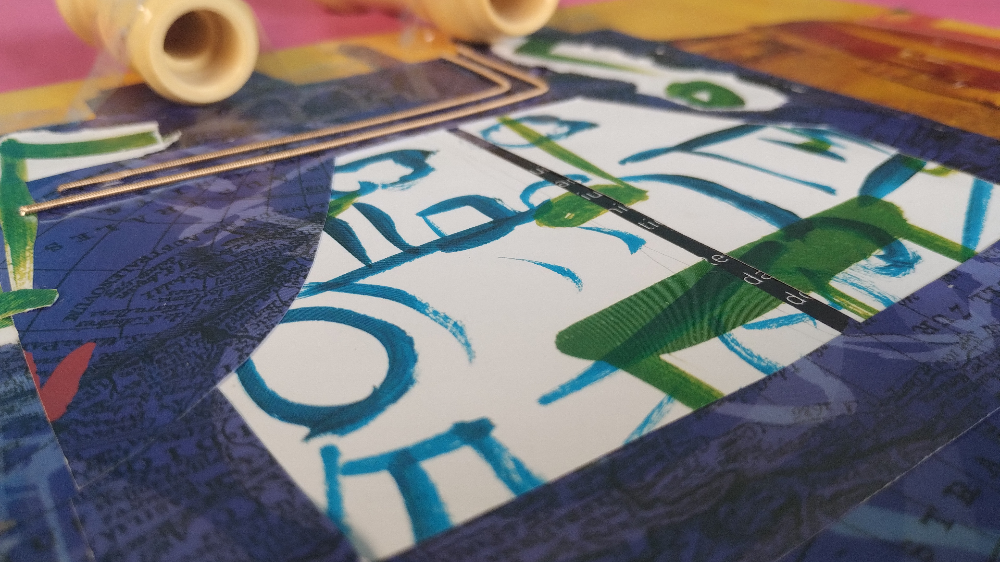
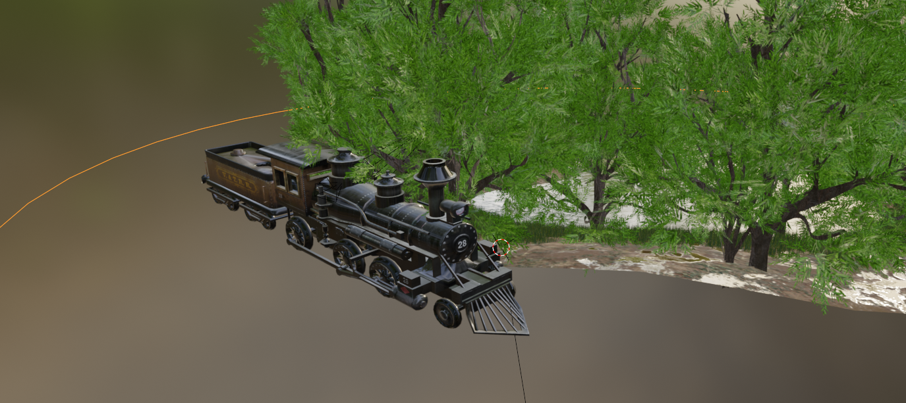

Modelagem 3D · Arduino
Descreva aqui o seu projeto. O que foi, qual era o objetivo, o que você queria explorar com ele.
Fale sobre as decisões criativas, os materiais, as referências que usou.
Pode ser direto e pessoal — não precisa soar como briefing.

